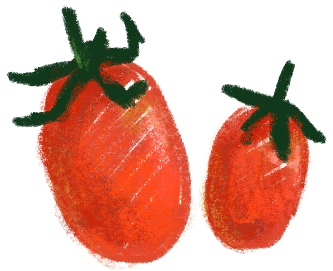
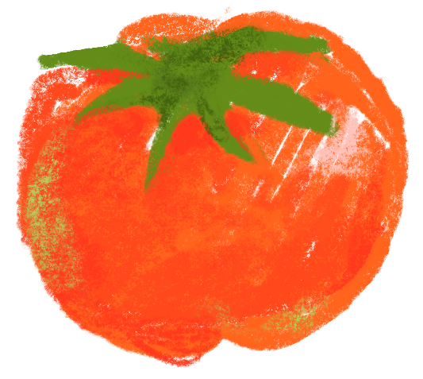
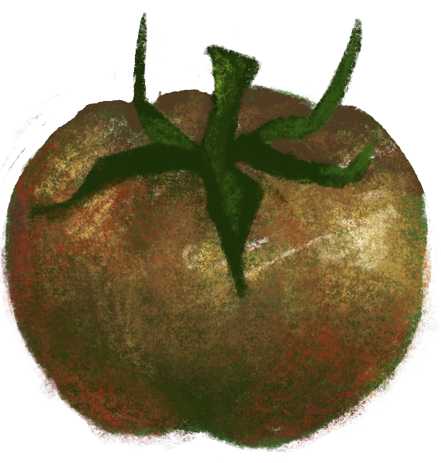
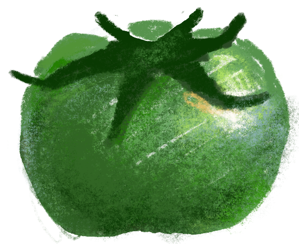
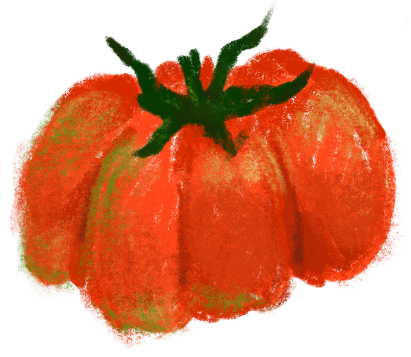

대추방울토마토 (Cherry Tomato)
작고 귀엽지만, 존재감은 확실한 미니 토마토의 대표주자!
한 입에 쏙 들어오는 크기와 새콤달콤한 맛,
그리고 얇은 껍질과 풍부한 당도 덕분에 누구에게나 사랑받아요.
도시락, 샐러드, 간식, 심지어 케찹까지,
모든 토마토 요리의 기본이자 국민 토마토라고도 불려요.
라이코펜과 비타민C도 풍부해서 피부미용에도 좋고,
100g당 15~20kcal 정도로 다이어트 간식으로도 최고!
보관할 땐 꼭지가 위로 가도록 세워두면 더 오래 싱싱하답니다. 🍅

토렌지 (Torenji / T’mato-orange)
토마토계의 뉴트로 스타, 새콤함과 달콤함의 이상적인 균형!
‘토렌지’는 이름처럼 토마토 + 오렌지의 상큼한 조합을 닮은 신개념 품종이에요.
겉모습은 밝은 주황빛으로 눈에 확 띄고,
맛은 일반 방울토마토보다 훨씬 더 상큼하고 과일 같은 단맛이 특징이에요. 🍊
식감은 껍질이 얇고 과육이 탱글해서 생으로 먹기 좋고,
과일처럼 접시에 담아 디저트처럼 먹는 토마토로 인기를 끌고 있어요.
최근엔 마켓컬리, 백화점 과일 코너, 고급 샐러드 바 등에서 자주 등장하죠.
영양 면에서도 라이코펜 + 비타민 A/C가 풍부해서
피부, 눈 건강, 면역력에 도움되고,
달콤한데도 칼로리는 낮아서 헬시 간식으로 딱!
📦 껍질이 얇아 상처가 나기 쉬우니,
냉장 보관보다는 서늘한 곳에 살짝 두는 걸 추천해요.

흑토마토 (Black/Purple Tomato)
“내 피부는 조금 어두워.
그치만 그만큼 진하고 깊은 단맛이 매력이야.
색소가 풍부해서 항산화 성분도 최고라고!
나는 좀 더 고급진 요리에 어울려.”

청토마토 (Green Tomato)
“나 사실 덜 익은 게 아니고, 원래 초록색이야!
새콤한 맛이 특징이고, 튀김이나 피클로 먹으면 식감이 최고야.
톡 쏘는 산미 때문에 '어른 입맛용 토마토'로 불리기도 해.”

비프스테이크 토마토 (Beefsteak Tomato)
“나는 햄버거 안에서 존재감 뿜뿜하는 토마토야!
한 조각만으로도 빵 사이에 촉촉함과 단맛을 채울 수 있지.
육질이 풍부해서 샌드위치, 버거, 스테이크에도 딱이야.”